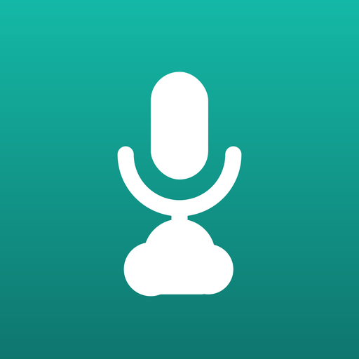

最後更新 Last updated：2026-10-22
本條款適用於 李碩祈（Shuo Chi Lee）以個人開發者身分發行的「隨手錄」（iOS / Android，以下稱「本 App」）。下載、安裝或使用本 App，即表示您同意本條款；若不同意，請勿使用並移除本 App。
iOSiOS 版另適用 Apple 的標準終端使用者授權合約（Standard EULA）；本條款為補充。本條款為您與開發者之間的協議，Apple Inc. 並非本條款之當事人，對本 App 不負任何責任。
開發者授予您一項不可轉讓、非專屬的授權，供您在自己擁有或控制的裝置上，依 Apple App Store 或 Google Play 的使用規範使用本 App。您不得對本 App 進行還原工程、反編譯、出租、轉售或再授權。
錄音、播放、搜尋，以及手動上傳到預設雲端（iOSiCloud Drive、AndroidGoogle Drive）免費。「隨手錄 Pro」另外解鎖：下載只在雲端的錄音、連接其他雲端並同時備份、存檔後自動備份、上傳失敗自動重試、僅在 Wi-Fi 上傳、改名同步到雲端。
| 方案 | 說明 |
|---|---|
| 月訂閱 | 每月自動續訂。 |
| 年訂閱 | 每年自動續訂。首次訂閱可享 7 天免費試用（每個 Apple ID／Google 帳號限一次，資格由商店判斷）；試用結束前未取消，即開始收取年費。 |
| 一次買斷 | 一次付款，永久使用，不會續訂。 |
本 App 之程式碼、介面設計、圖示與文案等權利均屬開發者所有。Dropbox、Google Drive、OneDrive、Synology、iCloud 等名稱與商標屬各該權利人所有，本 App 與各該公司無隸屬或合作關係。
開發者得隨時修訂本條款，修訂後將更新本頁面與「最後更新」日期。若您違反本條款，開發者得終止對您的授權。您隨時可透過刪除本 App 終止本條款。
本條款以中華民國法律為準據法；因本條款所生之爭議，以台灣台北地方法院為第一審管轄法院，但不影響消費者依消費者保護法所享有之權利。
These terms apply to Recorder (隨手錄) for iOS and Android (the "App"), published by Shuo Chi Lee as an individual developer. By downloading, installing or using the App you agree to these terms; if you do not agree, do not use the App and please delete it.
The iOS version is also subject to Apple's Licensed Application End User License Agreement, which these terms supplement. This agreement is between you and the developer; Apple Inc. is not a party to it and has no responsibility for the App.
You are granted a non-transferable, non-exclusive license to use the App on devices you own or control, as permitted by the App Store or Google Play usage rules. You may not reverse engineer, decompile, rent, resell or sublicense the App.
Everything you record belongs to you; the developer never receives or accesses it. You are responsible for obtaining any consent required before recording others and for complying with the laws that apply to you.
Backup is provided through third-party services (Dropbox, Google Drive, OneDrive, Synology Drive, and iCloud Drive on iOS). Your use of them is also governed by their terms. The developer is not responsible for their availability, changes, storage limits or data loss. Storage plans of those services are between you and them and are unrelated to Recorder Pro.
Recording, playback, search and manual upload to the default cloud (iCloud Drive on iOS, Google Drive on Android) are free. Recorder Pro also unlocks: downloading cloud-only recordings, connecting other clouds and backing up to several at once, automatic backup after saving, automatic retry of failed uploads, Wi-Fi-only upload, and renaming files in the cloud.
The App is provided "as is" and "as available" without warranties of any kind. Please keep your own backups of important recordings. To the maximum extent permitted by law, the developer is not liable for any direct, indirect, incidental or consequential damages, including loss of recordings, arising from use of or inability to use the App.
All rights in the App's code, design, icon and text belong to the developer. Third-party names and trademarks belong to their respective owners; the App is not affiliated with them.
These terms may be updated at any time; the "Last updated" date above will change accordingly. Your license ends if you breach these terms, and you may end it at any time by deleting the App.
These terms are governed by the laws of the Republic of China (Taiwan), with the Taiwan Taipei District Court as the court of first instance, without prejudice to mandatory consumer protection rights.